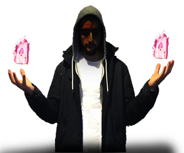

What got you interested in magic tricks? |
| I grew up with a passion and curiosity making the impossible seem possible. |
Which great magic artist inspired you, and who do you try to imitate? |
| I have been and still do get inspired by some great artists along my way, the likes of David Blaine and Dynamo with whom I share a similar style. Yet the goal will always be to stay creative, and surprise my audience |
What age did you start practising magic |
| You know I always like to have an element of surprise with me, ever since I was very young. At around the age of 6, my mother got me my first magic set. Since then i always remember experimenting with different ways to manipulate ideas we take for granted |